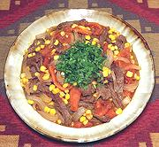

|
Beef & Tomato SautéChile - Tomaticán | ||||
| Makes: Effort: Sched: DoAhead: |
5 main *** 2-3/4 hrs Yes |
Considered a simple summer dish in Chile, this is like an Asian stir fry, and could be made in a wok. There is great controversy whether it should be served beside the rice, or over the rice. | |||
|
1 1 8 1 1 1 1/2 2/3 1/3 |
# # oz c T T t t t |
Beef, Lean (1) Tomatoes Onion Corn (2) Oil Oil (more) Cumin Seed Salt Pepper, black |
Prep - (25 min)
|
amm_cowtom1 220813 chk37 - www.clovegarden.com
©Andrew Grygus - agryg@aaxnet.com - Linking to and
non-commercial use of this page is permitted.